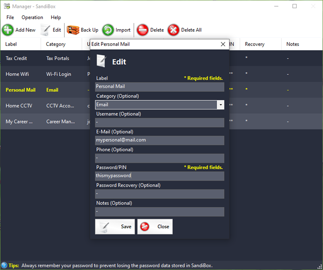

|
What is SandiBox?
SandiBox is a professionally built, multi-layered password manager designed exclusively for Microsoft Windows. It empowers users to securely store, manage, and back up sensitive credentials without relying on cloud services — ensuring full control and complete privacy over your data.
Whether you’re an individual, IT professional, or business user, SandiBox is built to protect what matters most: your passwords.
Key Features
- Local-Only Storage
- Keeps your passwords secure in an encrypted offline database — no internet connection required.
- Backup & Import
- Create backups of your password vault to local storage or a remote FTP server. Easily import using .sb (SandiBox Backup) files.
- Minimal & User-Friendly
- Designed with simplicity in mind, SandiBox delivers a clean and intuitive user interface while maintaining powerful security in the background.
- Lightweight & Fast
- Optimized for performance, with minimal system resource usage. Compatible with Windows Vista, 7, 8, 10, and 11.
|
|  |
| Download SandiBox 2.5.07.25 |
|
|
|